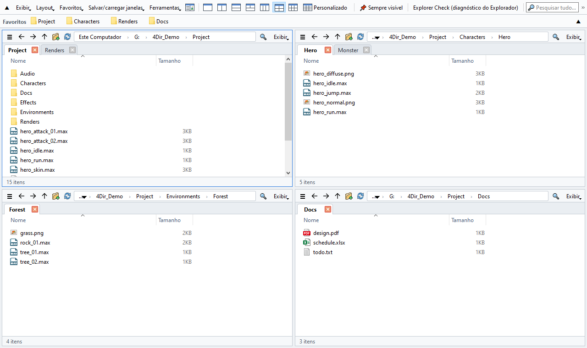
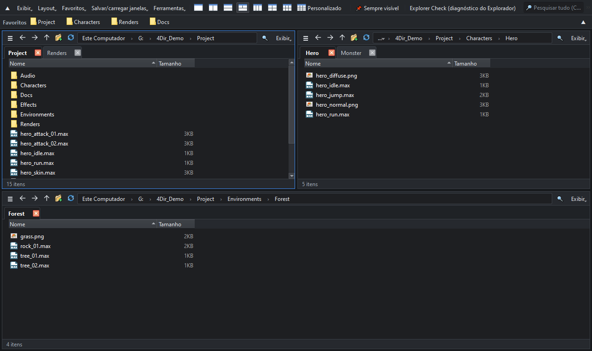

Até 20 painéis. Abas em cada painel. Leve para o seu PC.
Mais rápido que o Explorador de Arquivos do Windows!!
Gerenciador de arquivos gratuito para Windows 10/11. Sem instalação: descompacte e execute.
Windows 10/11 64 bits · 33 MB · 2026-10-24 · grátis
Novidades da v0.9.67
- Corrigido: nas exibições de ícones e lista, arrastar um arquivo selecionava vários em vez de movê-lo.
- Ao arrastar, as imagens mostram o próprio conteúdo e seguem o mouse a partir do ponto em que você as pegou, como no Explorer.

Recursos
Até 20 painéis
Layouts de 1, 2, 3, 4 ou 6 painéis com um clique, ou qualquer grade até 5 × 4. Cada painel tem suas próprias abas.
Não atrapalha
As pastas são lidas diretamente, sem a pesada visualização do shell do Windows. Sem temporizadores nem verificações em segundo plano quando ocioso: pode ficar aberto ao lado do 3ds Max, jogos ou outros apps pesados.
Busca instantânea
Digite para buscar entre todos os nomes de arquivo das suas unidades. O índice próprio é atualizado em tempo real, sem precisar de administrador.
Status do SVN num relance
Selos de modificado / adicionado / conflito lidos direto do .svn; as pastas ficam vermelhas quando algo mudou dentro. Git e Perforce pelas sobreposições do Windows.
Parece o Explorer
Mesmos atalhos de teclado, o menu de contexto completo do Windows, arrastar e soltar com o Explorer e outros apps. Clique com o botão direito em uma imagem .webp para salvá-la como PNG ou JPG.
Portátil e privado
As configurações ficam na pasta do 4Dir. Tema claro/escuro, 10 idiomas, renomear em lote, restauração de sessão e diagnóstico do Explorer incluídos.

Como instalar
- Baixe o zip pelo botão acima (ou em Releases no GitHub). O botão verde “Code → Download ZIP” do GitHub tem só o código-fonte e não executa.
- Clique com o botão direito no zip → Propriedades → marque Desbloquear → OK. (Senão o Windows mostra um aviso de segurança toda vez.)
- Descompacte onde quiser e dê dois cliques em 4Dir.vbs.
Se o Windows SmartScreen aparecer: clique em Mais informações → Executar assim mesmo.
Verificar o download (opcional)
No Prompt de Comando execute certutil -hashfile 4Dir_v0.9.67.zip SHA256; o resultado deve ser igual a:
70f8914123534afcca89817ee4f90699d91b482703b60dbe3167a6ae07f5b2d5
Apoie o 4Dir
O 4Dir é grátis e sem anúncios. Se ele economiza seu tempo, uma pequena doação ajuda a manter as atualizações.
Perguntas frequentes
É grátis mesmo?
Sim. O 4Dir é gratuito e de código aberto (GPL-3.0). Sem anúncios, sem conta, sem período de teste.
É mesmo mais rápido que o Explorador?
Abrir uma pasta com 1.000 arquivos em uma nova janela levou 0,4 s no 4Dir e cerca de 2 s no Explorador. Abrir mais uma janela somou cerca de 10 MB de memória no 4Dir e cerca de 130 MB no Explorador. Medido 5 vezes no mesmo PC (Windows 11, SSD). Com dezenas de milhares de arquivos em uma pasta a diferença diminui.
Ele envia dados?
Nenhum dado pessoal. Só verifica uma vez por dia se há versão nova (dá para desligar em Ferramentas).
Deu algum problema?
Ferramentas → Salvar log para relatório de problema e clique em “Enviar por e-mail” (ou envie o zip para support@4dir.net). No GitHub também dá para abrir uma issue.